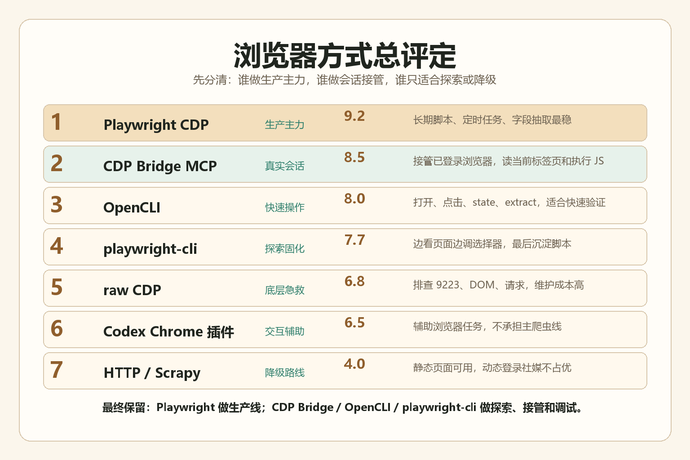

01



总排行：先分清谁负责什么
真正可用的工具箱不是单选题。最稳的路线，是让每个工具只做它擅长的那一段。
02
CDP Bridge MCP
会话接管03
OpenCLI
快速操作04
playwright-cli
探索固化05
raw CDP
底层急救06
Codex Chrome 插件
交互辅助07
HTTP / Scrapy 等
降级评分矩阵：不要只看“能不能打开”
我按真实爬数需要重新打分：登录态复用、可维护性、中文数据质量、交互能力、批处理能力、排障成本。
| 方案 | 定位 | 登录态复用 | 数据质量 | 长期运行 | 主要短板 | 综合 |
|---|---|---|---|---|---|---|
| Playwright connect_over_cdp | 最终脚本和定时任务生产线 | 强，直接连固定 Chrome 9223 | 最好，字段和中文最可控 | 最好，可写成 Python 脚本、入库、重试 | 需要写代码，探索阶段不如工具快 | 9.2 |
| CDP Bridge MCP | 让模型接管你正在用的真实浏览器 | 很强，18766 已能列出微博、小红书、抖音等标签页 | 好，适合页面扫描和 JS 执行 | 中上，适合作为交互桥，不宜独自承担批处理 | 健康检查要验它自己的链路，不能拿 Codex 烟测误判 | 8.5 |
| OpenCLI | 命令行快速打开、点击、state、find、extract | 强，已接固定 Chrome | 中等，结构可用但终端层可能中文乱码 | 中等，适合操作流，不适合作为唯一数据层 | 输出编码和 wrapper 参数边界要管 | 8.0 |
| playwright-cli | 探索路径、调试选择器、生成脚本 | 可通过 CDP attach 复用 | 好，但更偏探索 | 中等，本体不是最终运行层 | 长 JS、复杂数据抽取不如正式脚本舒服 | 7.7 |
| raw CDP | 最底层验证和急救 | 强 | 好，但靠自己封装 | 低，不适合团队维护 | 可读性差，脚本脆 | 6.8 |
| Codex Chrome 插件 | Codex 内交互式浏览器能力 | 强 | 中等 | 中低，更适合辅助而非爬虫主线 | 容易和会话、tab、烟测脚本耦合 | 6.5 |
| requests / Scrapy / Instaloader / Patchright | 传统抓取或替代浏览器路线 | 弱到中等 | 平台差异大 | 低，对动态登录页不占优 | 登录墙、反爬、动态渲染、字段漂移 | 4.0 |
逐项评定：每套方法留在哪里
点下面筛选，可以按使用场景查看。这里的结论按你当前固定 Chrome 和真实测试结果来写。
Playwright connect_over_cdp
主力最终应该沉淀到这里。它直连固定 Chrome 的 CDP 端口，既能复用登录态，又能把动作固化成可运行脚本。真正要每天、每周稳定拉数据，字段解析、去重、增量、重试、导出都应该写在这一层。
最好场景定时批处理
保留原因可维护
风险需要工程化
- 用于微博搜索、评论、账号页这类结构化抓取。
- 用于 TikTok / Instagram 在登录态允许下的页面滚动和字段抽取。
- 适合落 CSV、SQLite、Parquet，后续再接入数据库。
CDP Bridge MCP
上调这次重新评定后必须上调。它的 18766 fallback 已能返回当前真实浏览器标签页，包括微博、小红书、抖音、知乎等，并能执行 JS。它适合让模型读取当前页面、判断页面状态、执行小段脚本、截图和读取 Cookie。
最好场景真实会话接管
保留原因直接看现有标签页
风险别拿错验收链
- 适合“我已经打开并登录了页面，你来读一下”的任务。
- 适合跨多个已打开平台做检查和轻量抽取。
- 不建议独自承担大规模批处理，它更像模型和真实浏览器之间的桥。
OpenCLI
快刀OpenCLI 现在也是真可用。它能跑 doctor、browser open/state/find/extract，也能跑微博 search/hot。它适合运营式操作和快速排查，尤其是不用写脚本时快速看页面结构。
最好场景快速操作
保留原因命令简单
风险中文输出层
- 适合临时打开页面、点击、提取文本片段。
- 适合验证微博搜索结果是否能看到。
- 不建议直接作为最终数据导出层，除非编码问题已完全处理。
playwright-cli
探索它的价值不是替代 Playwright 脚本，而是让 AI 边看页面边定位元素、调试动作、最后把可行路径整理成标准脚本。它适合解决“按钮点了没反应”“iframe 结构复杂”“下载捕获不到”这类探索问题。
最好场景路径发现
保留原因沉淀脚本
风险不是运行层
- 先 snapshot，再 click/type，再生成 Python Playwright。
- 适合把一次性 AI 操作变成可重复脚本。
- 最终脚本仍建议交给 Playwright 正式项目管理。
raw CDP
急救raw CDP 很快，也最接近浏览器底层。它适合在其他工具表现异常时快速验证：目标页在不在、DOM 能不能读、网络请求有没有发出。但它太底层，不适合作为团队长期维护的主线。
最好场景底层排障
保留原因速度快
风险难维护
- 适合快速跑 Runtime.evaluate。
- 适合排查 CDP 9223 是否健康。
- 不适合复杂流程和多人维护。
Codex Chrome 插件
辅助它能接管固定 Chrome，但不该当主爬虫。它更适合作为 Codex 内部交互能力，处理页面查看、简单点击、局部检查。之前 tab/session 错位的问题也说明，不能用它的烟测结果来判 CDP Bridge 是否可用。
最好场景Codex 内操作
保留原因集成方便
风险会话耦合
- 适合辅助浏览器任务。
- 不适合承担数据生产。
- 验收时要和 CDP Bridge 分开看。
requests / Scrapy / Instaloader / Patchright
降级这些不是完全没用，而是不适合做你当前的主方案。TikTok、Instagram、微博、小红书、抖音这类页面有登录态、动态渲染、地区差异和反爬，纯 HTTP 或传统爬虫经常只能跑通样例，跑不稳日常供给。
最好场景低风险静态页
保留原因便宜轻量
风险平台不稳
- Scrapy 适合传统网页，不适合复杂登录态社媒主线。
- Instaloader 无登录或弱登录对 Instagram 很容易撞墙。
- Patchright 不是银弹，实测收益不如稳定的 CDP 路线。
最终落地路线：四层分工
不要把所有任务压给一个工具。正确做法是分层：看页面、试动作、固化脚本、批处理交付。
Step 1
CDP Bridge 看当前状态
先读真实浏览器标签页，确认账号是否登录、页面是否加载、搜索结果是否存在。它负责“接管现场”。
Step 2
OpenCLI 快速操作
需要点、搜、切页面、抽一段文本时，用 OpenCLI 快速完成，不要一开始就写完整脚本。
Step 3
playwright-cli 探索路径
遇到 iframe、按钮、下载、滚动加载时，用 playwright-cli 找到稳定路径和选择器。
Step 4
Playwright 批量生产
把已验证路径写成 Python Playwright，接 CSV、SQLite、Parquet、定时任务和失败重跑。
平台建议：按目标拆工具
微博、小红书、抖音、TikTok、Instagram 的共同点是动态页面；差异在登录态和字段稳定性。
微博：CDP Bridge 和 OpenCLI 已证明能读真实搜索页；长期抽取建议用 Playwright。
小红书 / 抖音：先用 CDP Bridge 判断页面和登录态，再用 Playwright 固化滚动、列表、详情页。
TikTok：公开 hashtag 可用 Playwright PoC；搜索、评论和批量任务要优先考虑登录态与风控。
Instagram：无登录路线基本不稳；必须围绕真实 Chrome 登录态设计，最终仍建议 Playwright 直连 CDP。
小红书 / 抖音：先用 CDP Bridge 判断页面和登录态，再用 Playwright 固化滚动、列表、详情页。
TikTok：公开 hashtag 可用 Playwright PoC；搜索、评论和批量任务要优先考虑登录态与风控。
Instagram：无登录路线基本不稳；必须围绕真实 Chrome 登录态设计，最终仍建议 Playwright 直连 CDP。
最后判断
真正的分水岭不是“哪个工具最酷”，而是谁能把失败原因、字段口径和重跑成本控制住。
最终保留组合：
Playwright 是生产线，CDP Bridge MCP 是真实会话桥，OpenCLI 是快速操作台，playwright-cli 是探索和脚本生成器。
raw CDP 只用于排障。传统 HTTP、Scrapy、无登录 Instaloader、Patchright 不再作为主方案。
为什么这样排 真实浏览器爬取最贵的不是打开页面，而是失败后的维护和重跑。
为什么保留 CDP Bridge 它直接读你已经登录的真实 Chrome，会话状态最有价值。
为什么不只靠插件 插件适合操作，不适合把字段、重试、增量做成供给线。
为什么最终还是 Playwright 因为你最后需要的是可交付的脚本，不是一次性会话。